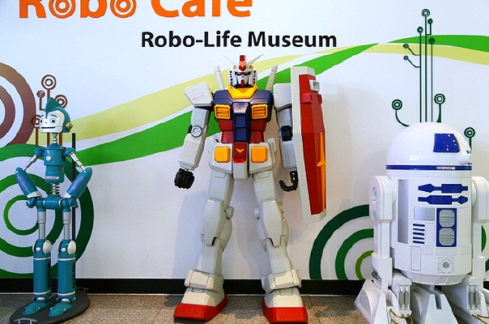
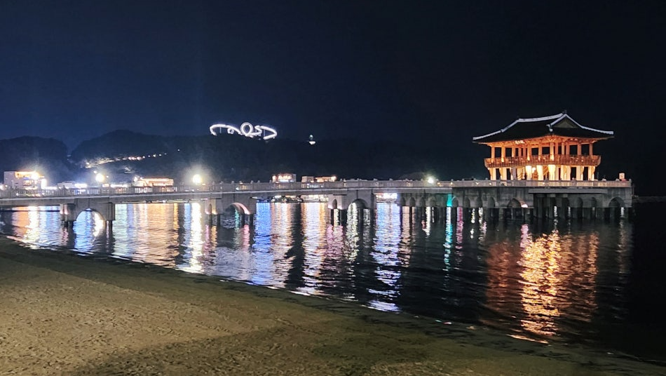
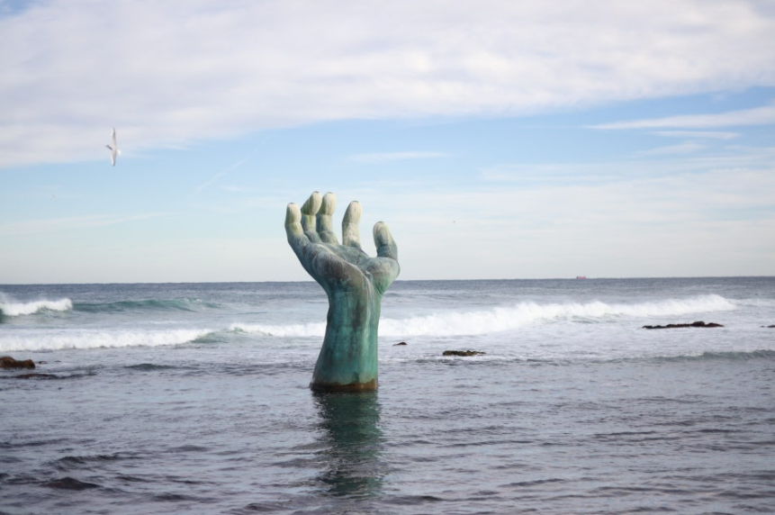
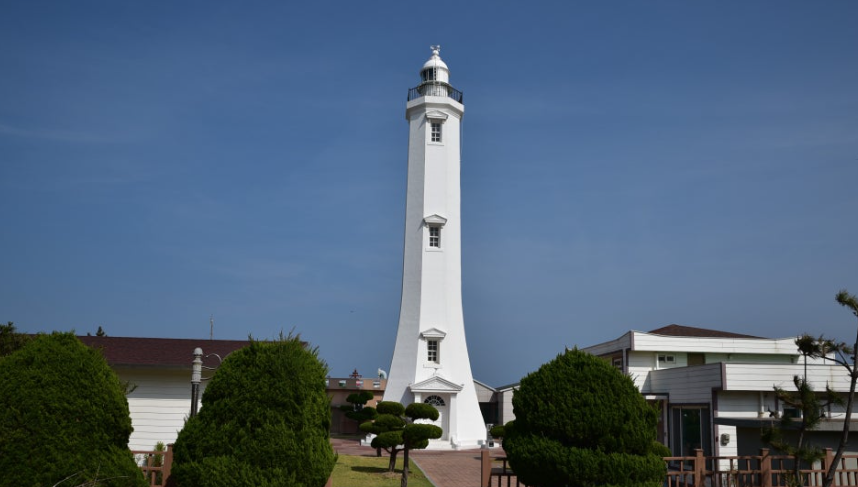
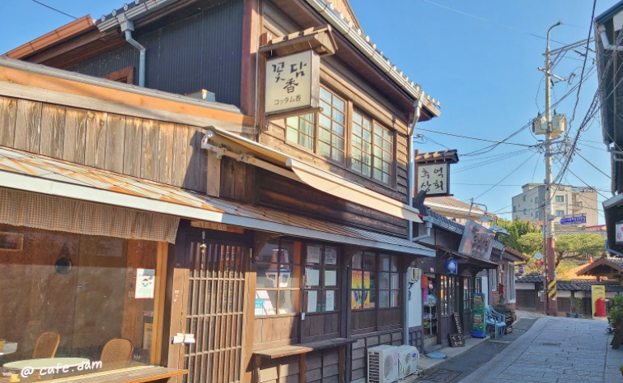

하늘 위를 걷는 것 같은 신기한 다리예요!
25미터 높이에서 바다를 내려다볼 수 있어요.
길이가 333미터나 되고, 계단이 717개나 있는 정말 큰 다리랍니다.
철과 빛의 도시 포항을 상징하는 아름다운 곡선 모양이에요.
밤에는 예쁜 조명이 켜져서 더욱 멋져요.
🌟 재미있는 사실!
중간에 360도 돌아가는 구간이 있어서 사진 찍기 정말 좋고, 낮과 밤의 분위기가 달라요.
로봇들과 함께 놀 수 있는 신나는 박물관이에요!
로봇이 춤추고, 노래하고, 말도 할 수 있어요.
VR/AR 체험도 가능하고, 미래 기술을 직접 경험할 수 있어요.
🤖 재미있는 사실!
로봇과 함께 사진도 찍을 수 있어요!

넓고 깨끗한 바닷가예요!
파도소리를 들으며 산책할 수 있고, 모래사장에서 뛰어놀 수도 있어요.
저녁에는 해가 바다 쪽으로 지는 모습을 볼 수 있어요.
🌅 재미있는 사실!
영일대는 포항에서 가장 유명한 바닷가 중 하나예요!

바닷가에 있는 큰 손 조각상으로, 상생의 의미를 담고 있어요.
한국에서 해가 가장 먼저 뜨는 곳으로도 유명합니다.
🌅 재미있는 사실!
호미곶은 한반도에서 해가 가장 먼저 뜨는 곳이에요!
바다 위, 오른손과 광장의 왼손이 서로 마주하고 있어요.

등대의 역사와 역할을 배우고, 전시물을 관람할 수 있어요.
바다 안전에 중요한 등대의 기능을 알 수 있습니다.
💡 재미있는 사실!
등대박물관은 한국 최초 등대박물관이에요.

100년전쯤, 구룡포는 물고기가 많이 잡히는 마을이었어요.
그래서 바다 건너 일본에서도 사람들이 건너와 살기 시작했어요.
그때 일본에서 온 사람들이 자기 나라에서 살던 방식으로 집을 짓고, 가게을 열어서 살았어요.
해방이 된 이후, 일본사람들은 모두 돌아갔지만, 그 당시 만들었던 마을 모양을 지금까지 유지하고 있어요.
🐉 재미있는 사실!
구룡포는 '9마리 용의 포구'라는 뜻이에요!
1945년에 해방이 되었고, 2025년이 광복 80주년을 맞는 해에요.

바다 위로 뻗은 투명 데크에서 바닷물을 내려다볼 수 있어 짜릿합니다.
야간 조명이 아름다워요.
🌊 재미있는 사실!
유리바닥을 통해 바다 속을 들여다볼 수 있어요!
포항 시내를 물길로 감상하는 50분 코스. 바람이 시원하고 전망이 좋습니다.
⛵ 재미있는 사실!
포항운하는 바다와 도시를 연결하는 특별한 물길이에요!